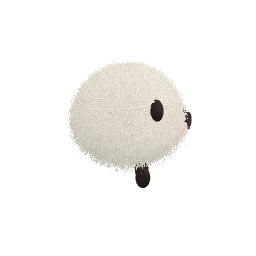
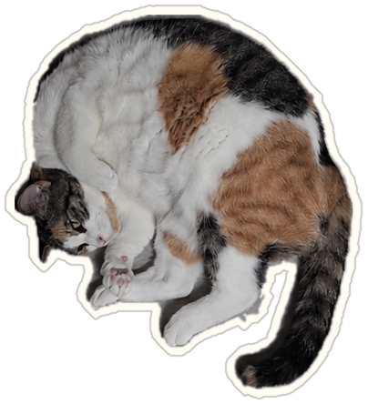
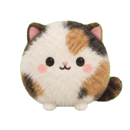

리얼뽑기, 펠트로 다시
v4 · 말씀하신 10가지
화면마다 직접 눌러 볼 수 있어요. 화면은 실제 앱 크기(360×780)이고, 뽑기 판정·문구는 지금 앱 코드 그대로예요.
1카메라로 진짜 녀석 뽑기
"잡자마자 작게" 하나로 정했어요. 집게가 몸을 집는 순간 녀석이 쏙 줄어들며 캡슐로 들어가고, 캡슐이 "탁" 닫혀요. 들려 올라간 캡슐은 맨 위에서 떨어져 세 번 통통 튀고 굴러 나가요.
- "고양이 찾았다!" 라벨은 찾은 녀석 위에 항상 떠 있어요(강아지·사람도 같은 자리).
- 집게는 빨리 내려가 살짝 파고든 뒤 닫히고, 올라갈 때 캡슐이 진자처럼 흔들려요.
- 미끄러져 놓침: 올라가다 캡슐이 덜덜 떨리다 "펑" 열리고, 작은 녀석이 제자리로 튕겨 돌아가요. 헛집음: 빈 곳에서 집게가 "딱" 닫혀요. 문구는 앱 그대로.
- 성공하면 2번 카드가 그 자리에서 떠요.





화면을 끌어 집게를 맞추고 빨간 버튼
2처음 뽑았을 때
캡슐이 굴러 나가면 뽑기 화면 위에 자랑 카드 그대로가 떠요. 보이는 그림과 올라가는 그림이 같아요.
- 캡슐은 카드에서 뺐어요. 오른쪽 위 도감 번호 우표는 이제 아무것도 안 가려요.
- 카드 문구(어디서 뽑았는지 + 성격 2개)는 AI가 한 줄로 지어요. 3번에 예시가 있어요.
- 주 버튼은 "자랑하기" 하나, "계속 뽑기"는 글자로.
3자랑 카드 (4:5)
인스타 피드에 올리는 한 장. 펠트 세계 위에 녀석, 오른쪽 위에 도감 번호 우표, 아래 이름표. 이름표의 한 줄과 성격 두 개는 AI가 사진을 보고 지어요.
- 삼색이 · 소파: "소파 구석에서 동그랗게 자다 뽑힘. 꿈에서 츄르 먹던 중" — 잠꾸러기 · 말랑함
- 흰둥이 · 침대: "이불 위에서 혀 내밀고 웃다 뽑힘. 아직도 웃는 중" — 해맑음 · 혀빼꼼
- 사람 · 책상: "책상 앞에서 마감이랑 눈싸움하다 뽑힘. 커피는 이미 식음" — 야근러 · 커피수혈
- 까망이 · 창틀: "창틀에서 비둘기 감시하다 뽑힘. 감시 일지는 내일 마저 씀" — 경비대장 · 새멍
- 아기 · 거실 매트: "매트 위에서 양말 벗기 도전하다 뽑힘. 한 짝 성공" — 꼬물이 · 도전정신
- 시바 · 산책길: "산책길 전봇대 냄새 맡다 뽑힘. 아직 반도 못 맡음" — 킁킁박사 · 직진
진짜 고양이 · 소파
진짜 강아지 · 침대
4도감
방금 뽑은 녀석이 맨 앞이에요. 별을 누르거나 칸을 꾹 누르면 즐겨찾기가 돼서 맨 앞에 고정돼요. 순서는 부드럽게 자리를 바꿔요.
- 순서: 즐겨찾기(고른 순) → 나머지는 뽑은 날 최신순 → 아직 못 뽑은 칸.
- 펫을 만드는 중인 칸은 흔들리는 캡슐(5번과 같은 캡슐).
도감
 털뭉치 7 / 16
털뭉치 7 / 16별을 누르거나 칸을 꾹 눌러 보세요
5펫 만들기
버튼은 처음에 "펫 미리보기". 누르면 털뭉치·피규어 두 가지를 한 번에 그려요. 다 그리면 버튼이 "털뭉치 펫 만들기 · 무료 5장"으로 바뀌고, 누르면 캡슐이 흔들리며 금이 가다 "퐁" 열려요.
- 금은 캡슐과 한 몸이라 같이 흔들려요. 다 열리면 캡슐은 사라지고 펫만 남아요.
- 무료가 끝나면 "· 500원". 광고는 없어요.
- 시안은 그리기 2초, 만들기(실제 1~3분)를 6초로 줄였어요. 나가도 되고 다 되면 알림.
 리얼뽑기
리얼뽑기삼색이 털뭉치가 다 됐어요!

삼색이
소파 구석에서 동그랗게 자다 뽑힘. 꿈에서 츄르 먹던 중
펫으로 만들기
사진으로 털뭉치·피규어 두 가지를 그려 볼게요 · 미리보기는 무료
6펫 설정
지금 앱 구성 그대로(펫 띄우기 · 누구를 띄울까 · 크기 · 두 번 톡톡 누르면 · 말풍선 · 소리), 생김새만 펠트로 바꿨어요. 뒤로 = 도감.
- 문구도 앱 그대로예요. "홈 화면/항상", "최근 앱/자주 쓴 앱/직접 선택"을 누르면 아래 설명이 앱처럼 바뀌어요.
- 크기는 홈 화면에서 실제로 보일 크기 그대로 세 마리를 보여 줘요.
펫
녀석을 끌어서 아래 줄이나 양옆 벽에 놓을 수 있어요.
잠금을 풀거나 충전기를 꽂을 때 녀석이 가끔 혼잣말을 해요. 두 번 톡톡 눌러 여는 말풍선은 그대로예요.
개인정보 처리방침
위아래로 끌어서 보세요
7날씨: 펫이 직접 해요
맑음 · 더움 · 추움 · 눈 · 비 · 미세먼지. 날씨가 바뀌면 털뭉치가 한 번 행동(우산 펴기, 마스크 쓰기…)을 하고, 그 뒤엔 그 모습으로 계속 살아요. 소품은 펫과 같은 3D 털 엔진에서 같은 빛으로 구웠어요.
- 12fps. 행동 → 반복 순서로 재생하고, 그림은 미리 다 불러온 뒤 시작해요.
- 6가지 모두 몽글·냥솜 둘 다 구웠어요. 아래 "녀석"으로 바꿔 보세요.
- 말풍선은 지금 혼잣말 그대로 한 줄.
날씨를 누르면 그 행동을 처음부터 해요
8스토어 첫 장
B안으로. 진짜 삼색이가 자는 소파 위, 바로 옆에 털뭉치 삼색이가 앉아 있는 한 장면. 위에 펠트 현수막 한 줄, 둘에게 바느질 이름표.
- 1080×1920 기준으로 짰어요(여기선 줄여서). 글자는 위아래 안전 여백(각 6%) 안에만.
- 사진은 실제 앱이 오린 그 삼색이와 그 털뭉치.

스토어 첫 장 (1080×1920)
9릴스: 구성 그대로, 펠트로
지금 릴스(35초)의 장면·자막·타이밍을 그대로 두고 그림만 펠트 수준으로 다시 그렸어요. 테두리(6번째 그냥 시켜본 것)도 그대로.
- 장면: 홈의 펫 → 진짜 고양이 → 집게로 집기 → 캡슐에서 털뭉치 → 도감 → 톡 → 두 번 톡(앱 구름) → 휘 튕기기 → 벽에 붙기 → 강아지·사람 → 그때 모습 → 곰인형 → 끝 카드.
- 아래 막대로 아무 장면이나 넘겨 볼 수 있어요.
10카메라를 끈 뽑기 (펠트 세계)
앱처럼 나를 빙 둘러싼 360° 고리예요. 폰을 돌리면 옆으로 돌아가고, 기울이면 지평선이 오르내려요. 배경은 끝과 끝이 이어지는 한 장짜리 펠트 파노라마.
- 여기선 화면을 옆으로 끌면 둘러보고, 위아래로 끌면 기울여요(폰으로 열면 자이로). 집게는 레일 쪽(위)에서 끌어요.
- 빨간 버튼은 늘 맨 위. 녀석이 지나가도 안 가려요.
- 잡는 판정은 앱 그대로(가운데 80% · 가장자리 35%), 놓치면 미끄러져 떨어져요.
옆으로 끌면 둘러보기 · 위쪽 레일을 끌면 집게